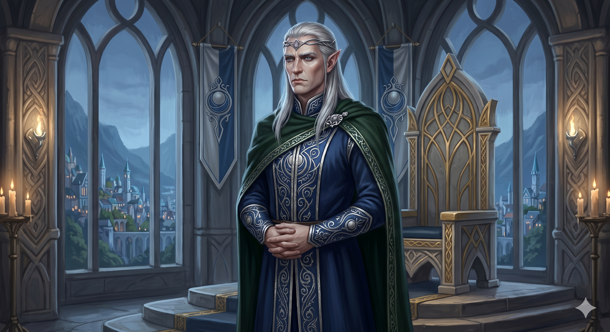

Appears in: Couch Potato Chaos, Couch Potato Crisis
Profile

- Appears in: Couch Potato Chaos, Couch Potato Crisis
- Aliases: King Iolo Questgiver, King Questgiver, Iolo
- Cross-book continuity: Appears in both books.
- Personality: King Iolo carries the weight of an ancient kingdom on his shoulders with a regal composure that never fully conceals the grief beneath. He is calm, measured, and deliberate — the kind of ruler who listens before he speaks and who delivers devastating news with the quiet authority of someone who has already spent years preparing for the worst. His reaction to confirmation of the countdown — “So the past has caught up with us at last” — reveals a monarch who has lived his entire reign in the shadow of his ancestor’s bargain with Entropy, knowing that the debt would one day come due. He does not panic, does not bluster, and does not defer; when Snickers delivers his rhyming prophecy about the end of the world, Iolo absorbs it and turns immediately to action. He is a strategic thinker who transforms existential dread into a concrete mission — the orb quest. As a father, his love for Kiwi is evident but expressed through duty rather than open affection: he launches the quest that puts his daughter in mortal danger because it is the only path to survival, a choice that haunts the margins of both books. In Crisis, his role shifts to that of the anxious sovereign coordinating a desperate rescue from afar — a king reduced to waiting and dispatching while his child is tortured in a foreign kingdom. The fact that he keeps Snickers — a chaotic, dangerous eidolon — as his closest adviser speaks to a ruler who values truth over comfort, even when that truth arrives in rhyming couplets.
- Backstory: Iolo is the reigning elven king of Questgivria, ruler of [Brightwind Keep](./location-brightwind-keep.html), and the latest in a line stretching back to Lorien Questgiver — the first elven king who led his people from the undying lands to Etheria and struck the fateful bargain with Entropy that gave the world resurrection in exchange for eventual destruction. His father was Lakuriel Questgiver, the second king of Questgivria. As a descendant of Lorien, Iolo inherited not just a throne but a ticking clock: the Entropy bargain ensured that every generation of Questgiver kings knew the world could end on their watch. He married Queen Lyra (also called Kiwano) and together they raised Princess Kiwistafel at the Brightwind court, providing her with the full education of a crown princess — including an unusual cross-cultural arrangement that sent her to study magic under [Magus Savik D](./character-magus-savik-d.html)'hagma in the dark-elven city-state of Gothmër. Iolo also took in [Prince Hermes](./character-prince-hermes.html), the one-armed dwarven prince who survived his father Dourmal’s attempt to kill him as an infant, raising him partly in Questgivria alongside Kiwi. This act of fostering created a tight-knit trio — Kiwi, Hermes, and [Sir Slimon](./character-sir-slimon.html) — that bridged human, dwarven, and elven politics and became central to the orb quest. Iolo’s court at Brightwind includes [Snickers the Bumble](./character-snickers-the-bumble.html) as royal jester and adviser, a figure described as “chaotic and dangerous” but tolerated because he speaks uncomfortable truths that others will not. When the countdown appeared on every clock in Etheria, Iolo’s inherited knowledge of the Lorien Pact gave him unique insight into what it meant — and what it would cost to stop it.
- Significant story events:
- Chapter 7 — The Jester and the King (Chaos): Iolo presides over the Brightwind court when Snickers delivers his rhyming prophecy explaining the countdown: Entropy will encircle the world and destroy all life when the timer reaches zero. Iolo reacts grimly with the line “So the past has caught up with us at last,” confirming that he understands the Lorien Pact and its implications. This is the moment the countdown gains concrete meaning for the court and the reader alike.
- Chapter 14 — [Snickers the Bumble](./character-snickers-the-bumble.html) (Chaos): A chapter centred partly on Iolo’s court and his relationship with his jester-adviser, further establishing the political dynamics at Brightwind.
- Chapter 20 — [Brightwind Keep](./location-brightwind-keep.html) (Chaos): The pivotal war council. Iolo confirms the countdown’s meaning to the assembled court — including Tasha, Kiwi, Ari, Pan, and their allies — and formally launches the orb quest. He explains that gathering the elemental orbs and opening the Hallowed Chapel may be the only way to end Entropy’s contract. This is Iolo’s defining act as king: he transforms scattered dread into a structured mission, assigning the party to seek out the Orb of Air, the Orb of Life, and other artifacts before the countdown expires. It is here that Kiwi is identified as the person uniquely able to claim the Orb of Life.
- Chapter 36 — The Dragon and the Dwarf (Chaos): Iolo receives the Orb of Air from Kaze the steam dragon after the arduous journey back to Brightwind. Kaze delivers the orb and recounts the party’s adventures. Iolo is now custodian of one of the world’s most dangerous artifacts — a responsibility that ties the crown directly to the cosmic stakes of the quest.
- Epilogue (Chaos): In the aftermath of the Orb of Life quest, Murderjoy charms Tasha, abducts Kiwi, and kills Tasha’s third life. Iolo’s daughter is taken into Zhakara — the very kingdom whose slave raids and assassination attempts he has spent his reign countering. The orb quest he launched to save the world has cost him his child.
- Chapter 1–2 (Crisis): Tasha, revived at the save point, reports the charm and kidnapping to the Questgivrian court. Iolo receives the devastating news and begins coordinating the search and rescue effort. Snickers serves as his information source during the early phase of the crisis. The king who launched the orb quest must now launch a very different kind of mission.
- Crisis (ongoing): Iolo coordinates from Brightwind as the rescue campaign takes shape — dispatching forces, hosting war councils, and drawing on Questgivria’s resources and alliances (including the dragon kingdom of Dragonholm) to support the strike into Zhakara. His role is that of the sovereign commanding from the rear, trusting others to do what he cannot.
- Epilogue (Crisis): Kiwi is reunited with both her parents at Brightwind. The emotional reunion — father and mother embracing the daughter who was abducted, conditioned, and nearly destroyed — is one of the Crisis epilogue’s key beats, even as the dark reveal about Penfold’s body-transfer operation casts a shadow over the ending.
- Notable Quotes:
“So the past has caught up with us at last.” — Chapter 7, The Jester and the King (Chaos). Iolo reacts to confirmation that Entropy’s ancient threat has returned, revealing the weight of inherited knowledge he has carried throughout his reign. [Iolo’s speech launching the orb quest in Chapter 20 — [Brightwind Keep](./location-brightwind-keep.html) — is a defining moment where he explains that gathering the elemental orbs and opening the Hallowed Chapel may be the only way to end Entropy’s contract. The full text of this address is not individually quoted in the wiki’s Notable Quotes section but would need to be sourced from the book.] [Iolo’s dialogue during the Crisis court scenes (Chapters 1–2), where he receives the report of Kiwi’s abduction and begins coordinating the rescue, is not individually quoted in the wiki but represents his most emotionally charged material across the series.]
- Relationships:
- Princess Kiwistafel (Kiwi): Daughter and crown princess. Their relationship is loving but shaped by the weight of royal duty and the orb quest he launched — a quest that put Kiwi in mortal danger to save the world, and ultimately led to her abduction. His reunion with her in the Crisis epilogue is deeply emotional.
- Queen Lyra (also called Kiwano): Wife and queen consort. She is the mother of Kiwi and co-ruler at Brightwind, though Iolo bears the primary burden of strategic and military decision-making.
- [Snickers the Bumble](./character-snickers-the-bumble.html): Royal jester and closest adviser, described as “chaotic and dangerous.” Iolo tolerates and relies on Snickers because the eidolon speaks uncomfortable truths that no one else in the court will voice. Theirs is an unusual but functional partnership built on candour rather than comfort.
- [Prince Hermes](./character-prince-hermes.html): Foster son. Iolo took in the one-armed dwarven prince after he survived [King Dourmal](./character-dourmal.html)'s attempt to kill him as an infant. Raising Hermes alongside Kiwi in Questgivria was an act of both compassion and diplomacy, forging bonds between the elven and dwarven kingdoms.
- [Sir Slimon](./character-sir-slimon.html): Close ally and Kiwi’s romantic partner. Slimon, Kiwi, and Hermes form a tight-knit trio that Iolo trusts as the core of the orb quest party.
- [Tasha Singleton](./character-tasha-singleton.html): Ally and the Player whose report of Kiwi’s abduction launches the Crisis rescue campaign. Iolo trusts her account and draws on her capabilities for the mission.
- Lorien Questgiver: Ancestor and the first elven king. Iolo’s reign is defined by the bargain Lorien struck with Entropy — the inherited curse that the orb quest is designed to break.
- Lakuriel Questgiver: Father and the second king of Questgivria.
- [King Dourmal](./character-dourmal.html): Fellow monarch and Hermes’s father. The political dynamic between Brightwind and the Laundry Mountain is complicated by Dourmal’s tyranny and the fostering arrangement for Hermes.
- [Queen [Aralynn Murderjoy](./character-queen-aralynn-murderjoy.html)](./character-queen-aralynn-murderjoy.html): Geopolitical rival and the existential threat to his kingdom and family. Murderjoy’s slave raids, assassination attempts, and eventual abduction of Kiwi make her Iolo’s most personal enemy.
- References: Couch Potato Chaos: Chapter 7 - The Jester and the King, Chapter 14 - [Snickers the Bumble](./character-snickers-the-bumble.html), Chapter 20 - [Brightwind Keep](./location-brightwind-keep.html), Chapter 36 - The Dragon and the Dwarf, Epilogue | Couch Potato Crisis: Chapter 1 - Couch Potato Crisis, Chapter 2, Tasha’s Bad Day, Epilogue